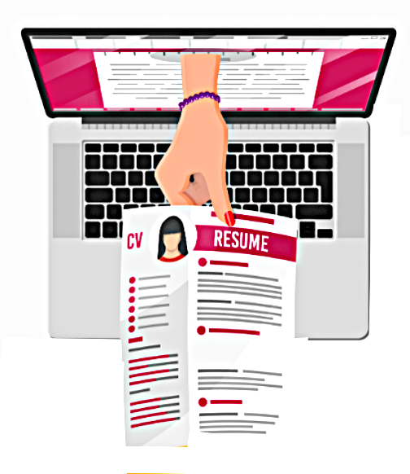

An Skill tracking portal to boost your job readiness.

All Users
Add New User
Search Users by Skill
X
Sign In
Ask AI a question
Frequently Asked Questions
What is a resume checker?
A resume checker is a tool or software used to evaluate and improve resumes. It checks for proper formatting, relevant keywords (important for Applicant Tracking
Systems), grammar and spelling errors, and content relevance. Enhancv's resume checker also assesses consistency in details, suggests customization for different industries, and provides feedback for improvement. We help ensure your resume meets current professional standards and trends and increase your chances of getting noticed by employers and recruiters.
How do I check my resume score?
Upload your resume to Enhancv's Resume Checker. Once we run the check you will be redirected to another page where you can see your report with a score on the
left side of the screen. Keep in mind that there's no such thing as an ATS score - no tool online that provides an actual score. Enhancv's resume report scoring system is based on:
The percentage of parsed content – the more we understand from your resume, the better it performs with an ATS.
The issues our checker finds – while ATS doesn't check for typos and badly written content, our checker does.
How do I improve my resume score?
A higher resume score can be achieved by improving key sections on your resume. Here's what you can do:
. Rewrite your experience section to include quantifiable achievements. Don't just state your job duties. Write your accomplishments in the position you've held.
. Include skills that are relevant to the position you're applying for and are included in the job posting.
. Add an accomplishments section to highlight the truly relevant feats of your career.
· Use a PDF resume and a professionally designed resume template.
. Fix spelling and grammar mistakes. Ensure you're using active voice throughout your resume.
How do I know my resume is ATS compliant?
To ensure your resume is ATS-compliant, integrate relevant keywords from the job description in a natural manner, use simple formatting with a clear layout, and stick
to conventional headings like "Work Experience" and "Education".
Unlike most advice on the internet, using a PDF from a dedicated resume builder like Enhancv is better than using a Word or doc file, as it ensures your formatting stays
intact. Double-column resumes are just as good as single-column resumes and fonts don't seem to matter that much as long as they're easy to read.
Spell out acronyms alongside their full phrases, include a distinct skills section, maintain a consistent work history with clear job titles and employment periods, and
meticulously proofread for errors.